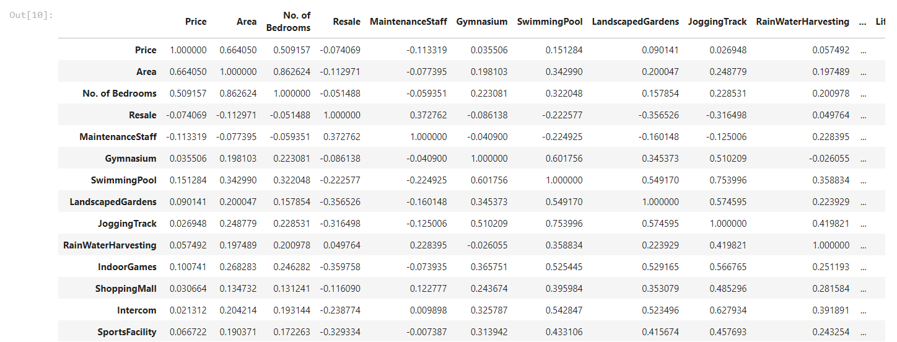
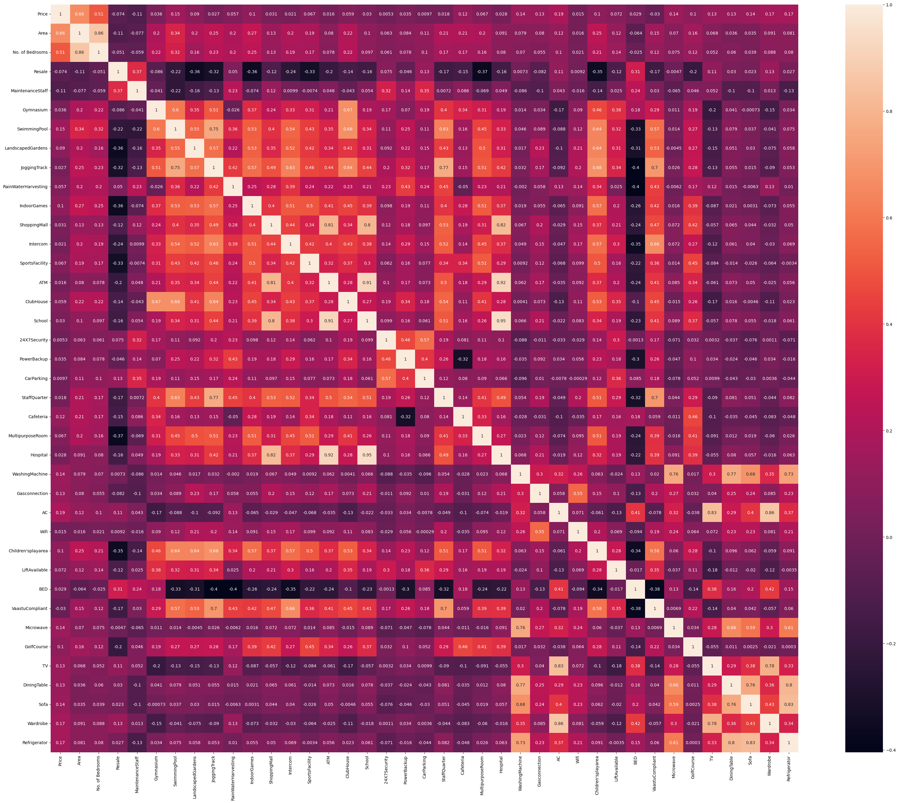
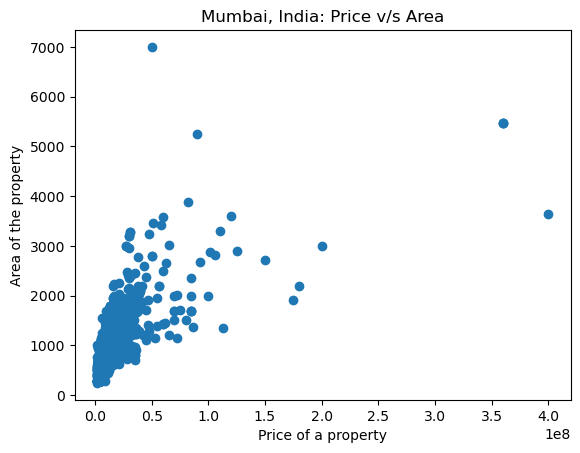
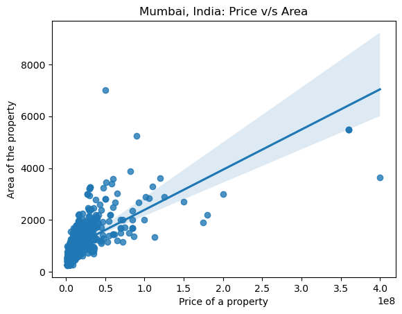
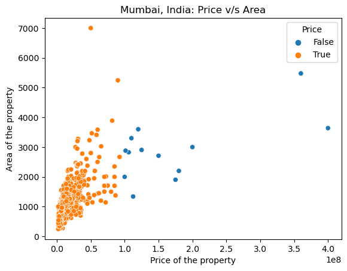
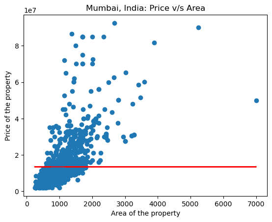
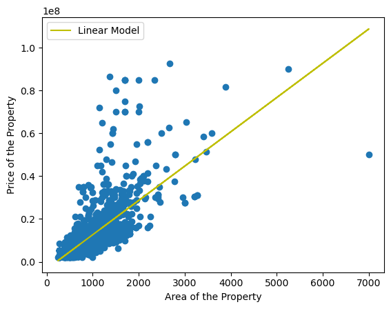

The technology of Machine Learning has enabled us to create exceptionally intiuitive Regression models in Python! This project looks into making one predicting housing prices in a particular area

The technology of Machine Learning has enabled us to create exceptionally intiuitive Regression models in Python! This project looks into making one predicting housing prices in a particular area
The current project will look into housing prices of cities of Mumbai, India and Delhi, India. Do correlation analysis on several factors of housing prices and make a machine learning model to predict the housing prices in either of the cities
日本語説明
Made on 6th April 2023
A regression model provides a function that describes the relationship between one or more independent variables and a response, dependent, or target variable.
For this project we are going to focus on linear regression and focus on the correlation between two variables: 1) Housing prices and 2) Area of Land
To give context, what are the housing in big cities like Mumbai and Delhi like? Do they depend on Quality of the building? Size of the room? Or the amount of appliances in the room? If so, how does it work?
One way to find out, is to first check the correlation between all the variables which we think can have effect on the housing prices and check how they react on a graph
I have tried to solve the problem according to the following steps:
Let's get started with first finding a suitable dataset!
I have found this suitable dataset already ready for analysis on Kaggle
I took the mumbai.csv and delhi.csv from Kaggle for this project. However, you can any other dataset for this project as well!
Step one is to load the important packages for this project and read the CSV file in the project
import pandas as pd
import numpy as np
import plotly.express as px
data=pd.read_csv("mumbai.csv")
print(data.head())
Loading the body will have an output which looks like this
Price Area Location No. of Bedrooms Resale MaintenanceStaff \
0 4850000 720 Kharghar 1 1 1
1 4500000 600 Kharghar 1 1 1
2 6700000 650 Kharghar 1 1 1
3 4500000 650 Kharghar 1 1 1
4 5000000 665 Kharghar 1 1 1
Gymnasium SwimmingPool LandscapedGardens JoggingTrack ... \
0 0 0 0 0 ...
1 1 1 0 1 ...
2 1 1 0 1 ...
3 0 0 1 0 ...
4 0 0 1 0 ...
LiftAvailable BED VaastuCompliant Microwave GolfCourse TV \
0 1 0 1 0 0 0
1 1 0 1 0 0 0
2 1 0 1 0 0 0
3 1 1 1 0 0 0
4 1 0 1 0 0 0
DiningTable Sofa Wardrobe Refrigerator
0 0 0 0 0
1 0 0 0 0
2 0 0 0 0
3 0 0 1 0
4 0 0 0 0
[5 rows x 40 columns]
The head is rather long because of the data we have for this project
We now check for the data type and the titles of every column with the following code
data.info()
The output will info on all of the columns and all the data-types in it which looks something like this
<class 'pandas.core.frame.DataFrame'>
RangeIndex: 7719 entries, 0 to 7718
Data columns (total 40 columns):
# Column Non-Null Count Dtype
--- ------ -------------- -----
0 Price 7719 non-null int64
1 Area 7719 non-null int64
2 Location 7719 non-null object
3 No. of Bedrooms 7719 non-null int64
4 Resale 7719 non-null int64
5 MaintenanceStaff 7719 non-null int64
6 Gymnasium 7719 non-null int64
7 SwimmingPool 7719 non-null int64
8 LandscapedGardens 7719 non-null int64
Next we check the values and their ranges
data.describe()
The output will describe the values such as the Max value, Minimum Value, Mean and much more
Price Area No. of Bedrooms Resale MaintenanceStaff Gymnasium SwimmingPool LandscapedGardens JoggingTrack RainWaterHarvesting ... LiftAvailable BED VaastuCompliant Microwave GolfCourse TV DiningTable Sofa Wardrobe Refrigerator
count 7.719000e+03 7719.000000 7719.000000 7719.000000 7719.000000 7719.000000 7719.000000 7719.000000 7719.000000 7719.000000 ... 7719.000000 7719.000000 7719.000000 7719.000000 7719.000000 7719.000000 7719.000000 7719.000000 7719.000000 7719.000000
mean 1.506165e+07 998.409250 1.913331 0.647105 7.498899 7.473896 7.437881 7.441638 7.439435 7.477005 ... 7.518331 7.417930 7.454722 7.372069 7.379712 7.379065 7.373624 7.374530 7.383988 7.374789
std 2.052100e+07 550.967809 0.855376 0.477901 3.197923 3.252095 3.328245 3.320401 3.325002 3.245418 ... 3.155041 3.369523 3.292904 3.462108 3.446892 3.448185 3.459020 3.457217 3.438345 3.456702
min 2.000000e+06 200.000000 1.000000 0.000000 0.000000 0.000000 0.000000 0.000000 0.000000 0.000000 ... 0.000000 0.000000 0.000000 0.000000 0.000000 0.000000 0.000000 0.000000 0.000000 0.000000
25% 5.300000e+06 650.000000 1.000000 0.000000 9.000000 9.000000 9.000000 9.000000 9.000000 9.000000 ... 9.000000 9.000000 9.000000 9.000000 9.000000 9.000000 9.000000 9.000000 9.000000 9.000000
50% 9.500000e+06 900.000000 2.000000 1.000000 9.000000 9.000000 9.000000 9.000000 9.000000 9.000000 ... 9.000000 9.000000 9.000000 9.000000 9.000000 9.000000 9.000000 9.000000 9.000000 9.000000
75% 1.700000e+07 1177.000000 2.000000 1.000000 9.000000 9.000000 9.000000 9.000000 9.000000 9.000000 ... 9.000000 9.000000 9.000000 9.000000 9.000000 9.000000 9.000000 9.000000 9.000000 9.000000
max 4.200000e+08 8511.000000 7.000000 1.000000 9.000000 9.000000 9.000000 9.000000 9.000000 9.000000 ... 9.000000 9.000000 9.000000 9.000000 9.000000 9.000000 9.000000 9.000000 9.000000 9.000000
8 rows × 39 columns
It is time to load all the machine learning related libraries
import seaborn as sns
import matplotlib.pyplot as plt
from sklearn.linear_model import LinearRegression, Ridge
from sklearn.metrics import mean_absolute_error
from sklearn.impute import SimpleImputer
from sklearn.pipeline import make_pipeline
from ipywidgets import IntSlider, interact
from glob import glob
We will clean the data and clear all the NULL values from the dataset and
data.replace(9, np.nan, inplace=True)
data.dropna(inplace=True)
data.isnull().sum()/len(data)*100
We will do some additional clean and check for the correlation between the values
#Removing values which do not have a numberical value
number_columns = data.select_dtypes(exclude='object')
#Checking correlations between the values
number_columns.corr()
The output will look something like this, all the variables being checked for correlation against the other variable
Find the whole table in the Jupyter of the project here
It is little difficult to figure out which variables are worth considering for the analysis, we can thus create a visualisation to feel the aspect of correlation more effectively. Let's create a heat map.
numbers_correlation = number_columns.corr()
plt.figure(figsize=(40,32))
sns.heatmap(numbers_correlation, annot=True, square=True)
The output will create a beautiful visualisation which looks like this
We can see that variable Prices V/s Area has a relatively good correlation, thus we can do linear regression against these values and check how they plot on a graph
Usually a correlation of 60% might not be a good indicator of a good correlation, but for this project, this is the only available option
Let's plot all the values of Price V/s Area
plt.scatter(x = data['Price'], y = data['Area'])
plt.xlabel('Price of a property')
plt.ylabel('Area of the property')
plt.title('Mumbai, India: Price v/s Area')
The resulting plot will look like this:
Let's do regression analysis and plot the most suitable line
sns.regplot(x = data['Price'], y = data['Area'])
plt.xlabel('Price of a property')
plt.ylabel('Area of the property')
plt.title('Mumbai, India: Price v/s Area')
Resuting Graph will look something like this
Now let us remove some outliers, so the plot can does not get affected by them
normal_house_range = data["Price"]< 100000000
#Seperate those values and visualise them on the scatterplot
sns.scatterplot(x = data['Price'], y = data['Area'], hue = normal_house_range)
plt.xlabel('Price of the property')
plt.ylabel('Area of the property')
plt.title('Mumbai, India: Price v/s Area')
Resulting graph will look something like this
Now let's train a model and define a baseline for the data! Anything or any value below the baseline can be considered as not reliable
#Removing the outliers and revising the dataset
data = data[normal_house_range]
# 'Price' as the target of the prediction
target = "Price"
# 'Area' as the feature of the prediction
feature = ['Area']
X_train = data[feature]
y_train = data[target]
y_mean = y_train.mean()
y_pred_baseline = [y_mean] * len(y_train)
len(y_pred_baseline) == len(y_train)
plt.plot( X_train.values, y_pred_baseline, color="red")
plt.scatter(x = X_train, y = y_train)
plt.xlabel("Area of the property")
plt.ylabel("Price of the property")
plt.title("Mumbai, India: Price v/s Area")
The resulting body will look something like this:
We need to check if our values are reliable. One way is to check for mean prediction error
mae_baseline = mean_absolute_error(y_train, y_pred_baseline)
print("Mean Apartment Price:", round(y_mean, 2))
print("Baseline MAE:", round(mae_baseline, 2))
The output looks something like this:
Mean Apartment Price: 13451545.18
Baseline MAE: 8324779.64
We will now train the machine learning model
#Buidling a machine learning model
model = LinearRegression()
model.fit(X_train, y_train)
#Training the model
y_pred_training = model.predict(X_train)
y_pred_training[:5]
#Checking the MAE for the training Model
mae_training = mean_absolute_error(y_train, y_pred_training)
print("Trainng MAE:", round(mae_training, 2))
The training MAE will look like this:
Trainng MAE: 5566140.1
The model is ready, and looks relatively good. We will now use this model on a target dataset and check for our equations. In this case we will use the Delhi.csv
delhi = pd.read_csv("Delhi.csv")
X_test = delhi[['Area']]
y_pred_test = pd.Series(model.predict(X_test))
y_pred_test.head()
We now check for the intercept and coefficient
intercept = round(model.intercept_, 2)
print("Model intercept:", intercept)
coefficient = round(model.coef_[0], 2)
print('Model coefficient for "area":', coefficient)
The Model coefficient for "area": 16015.84 and the Model intercept: -3383620.23
That will give us the equation for the linear regression as:
apartment_price = -3383620.23 + 16015.84 * area
Plotting the data for the city of Delhi along with the line will look something like this:
With the help of the Eqauation up above, we can also create a creative slider and use it to create Interactive app which can predict house prices
You can find the script for creating a Python App in the project Files!